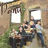

Celtic Lyrics Corner > Artists & Groups > Danú > All Things Considered > Idir Áird Mhór Is Eochaill
|  | Idir Áird Mhór Is Eochaill |
| Credits : | Traditional; arranged by Danú |
| Appears On : | All Things Considered |
| Language : | Gaeilge (Irish Gaelic) |
| Lyrics : | English Translation : |
| Idir Aird Mhór is Eochaill sa ród seal do bhíos | 'Twas between Ardmore and Youghal, I was once on the road |
| Ar chóngar na taoide is í ag tráchaint | Near the tide when it was ebbing |
| Sea do dhearcas an ógbhean go mómharach binn | That I beheld the gentle sweet young lady |
| 'S a cuacha léi cíortha go básta | With her tresses combed down to her waist |
| Is cailín ó Eochaill í, is eolach dom í | She's a girl from Youghal that I know |
| Is tá sí gan pósadh go dpósfadsa í | And she'll be unmarried until I marry her |
| Tá coróin geal i'm phóca 'gus ólfaimíd í | There's a bright crown in my pocket and we'll drink it |
| Agus fágfaimíd siúd mar atá mé | And we'll leave things as they are |
| Do thugas grá chléibh' duit, a spéirbhean, ar dtúis | I offered you sincere love, oh beautiful woman, at first |
| Nuair a leagas mo shúil ar do bhánchnis | When I set my eyes on your fair skin |
| Is go mbfhearr liom ná mórchuid den ór atá agat | And I'd rather than most of the gold you own |
| Go mbeifeá sa chúinne ag mo mháithrín | That you'd be in the corner with my dear mother |
| Bheadh do bhabaí breá bó agat tráthnóna le crú | Your baby would be beautiful, you'd have a cow to milk in the evening |
| Is do leaba breá cóirithe go ló duit sa rúm | And your fine bed made up until day for you in the room |
| Chuirfinn búclaí i'd bhróga luach coróineach is púnt | I'd put buckles on your shoes, worth a pound and a crown |
| Is, a stóirín, ná tabharfá do lámh dom? | And, my darling, won't you give me your hand? |
| Ní thabharfainn mo lámh duit go brách le haon fhonn | I wouldn't gladly ever give you my hand |
| Go gcuirfead scéala ar dtúis chun mo mháithrín | Until I'd first let my dear mother know |
| Mar fuair sí do thuairisc go suarach ar dtúis | Because she has heard of your bad reputation at first |
| Gur minic do chúrsa go dtí an tábhairne | That 'tis often you head for the pub |
| Nárbh aon ní leat ól ó'n choróin go dtí'n punt | That's it no bother for you to drink from a crown to a pound |
| Ag caitheamh do stóir ar mhná óga is ar lionn | Spending your money on young women and stout |
| Tar éis díol as fear cheoil ní bheidh feoirling i'd phúitse | After paying the musician you won't have a farthing in your purse |
| Is a stróille, cé thabharfadh bean bhreá dhuit? | So, you ne'er-do-well, who would give you a fine woman |
| Ná creidse na scéalta, na bréaga atá ar siúl | Don't you believe the stories, the lies that go around |
| Is annamh mo thuras go tigh tábhairne | It's seldom I go to the pub |
| Tá airgead i'm phóca is mórchuid i'm thrúnc | I've money in my pocket and a lot in my trunk |
| Níor ólas riamh punt ar aon láthair | I never drank a pound in any place |
| Bheadh a mhalairt de ghnó againn sa bhfómhar atá chughainn | 'Twill be another story in the next autumn |
| 'Baint garraithe prátaí is ag cur stácaí ar a mbonn | Digging fields of potatoes and building stooks of corn |
| Is mo mhacha bheith lán de bha bána is dubha | And my fields will be full of cows, black and white |
| Gan aoinne chun iad a chrú ach mo mháithrín | With no one to milk them but my dear mother |